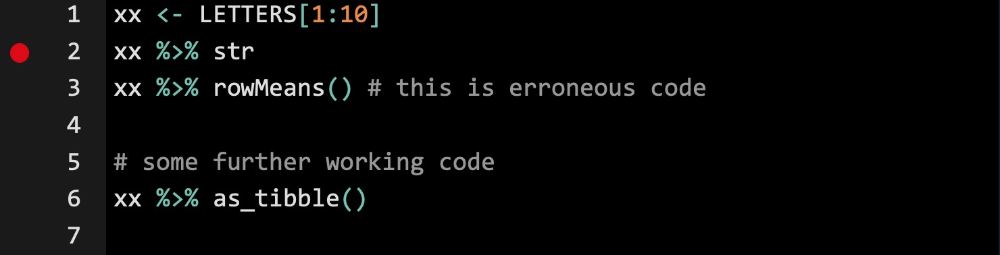
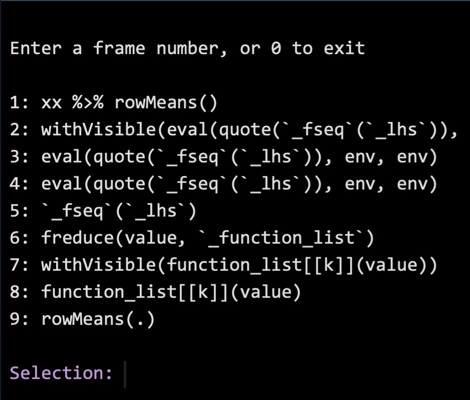
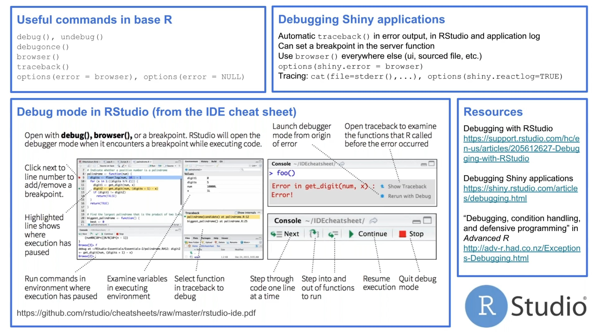

Lesson 11: Debugging and troubleshooting in R
Functions for Lesson 11
debug(),traceback(),browser(), options(), test_that(), qq_show()
Packages for Lesson 11
reprex, rlang, testthat
Agenda
Debugging with purpose in R
Troubleshooting terminology
error
debug
breakpoint
callstack
traceback
browser
Restart your R workspace
The blanket approach to debugging. This resets your installed packages to the version you initially loaded on your computer and into the memory in your new R session.
Common arenas that breed errors and issues
Working with many packages across multiple R sessions
- Restart
Rto reload the current package version into theRsession memory
- Change your
Rpreferences so that your current workspace doesn't translate stored objects to any future workspaces - Set "Save workspace to .Rdata on exit" to 'Never'
- Uncheck "Restore .Rdata into workspace on startup"
Finding errors in collaborators' code
- Create a minimal reproducible example
Advantages of creating minimal reproducible examples
- Removes noise from your problem code
- Creates a neater template for outside help e.g. StackOverflow forums - Helps you diagnose and solve your own problem
- Feedsback to deeper understanding of root issues to simplify future troubleshooting
debug() function and using breakpoints
Insert breakpoints in RStudio IDE at specific rows * Sometimes cleaner by avoiding editing code directly

# first insert breakpoint in code
debug(your_function) # run debug mode on function with error
debugonce(your_function) # run debug once for first call of function Two options within Console:
* Show/Hide traceback
* Rerun with Debug
Using options(error=recover)
Browse[1]> * Run R commands as per usual, but with error browsing capabilities
The traceback will look like a menu with options

- The 1 represents the frame number in the traceback
ls.str()= Runstron all current objects in memory. When run withBrowse[1]>, it can identify what objects in memory could be interfering with your commands and causing the error.
Using browser()
Allows you to move incrementally through code lines to identify error location
1. Insert browser() within code before error
Chances are you're unsure of error location, so best practice is to start further up and work down.
- Run troublesome code and enter browser mode
- Press Next or type
nto move down through each line
- Once you enter the troublesome line, the
Browser[]>index will move up a number(?). Presssto step into code.
- From here, you can engage with
Robjects using regular commands e.g.xx %>% str(), xx %>% dims()
- Change the
Robject directly within debugging mode to diagnose the issue using the newly corrected object
- Enter
Qor use the STOP button to exit browser
- Use
undebug()to stop debugging for any new errors
xx <- LETTERS[1:10]
browser() # enter browsing mode before error
xx %>% rowMeans() # this is erroneous code Using the reprex package
Debugging summary
last.warning
geterrmessage() # get last warning and/or error message
traceback() # trace backwards in the call stack to error position
browser() # move incrementally through code lines
rm(list = ls()) # lists and deletes all objects in your global workspace
# base options
options(error = recover) # turn on r debugger
options(error = NULL) # turn off debugger
options(future.debug = T) #
options(gargle.quiet = F) #
options(internet.info = 0) # info printed with url downloads. 0 = most, 2 = minimum 
rlang package
require(rlang)
last_error() # latest error
last_trace() # traceback last error
qq_show()Some common abstract error messages
Error: object of type closure is not subsettable
Meaning
- When you try to index or subset a function
- When you try to access a stored
Rfunction as a variable e.g. usingdataas a local variable
# the following are all errors
sum[1]
sum[[1]]
sum$a
data # this is a native r function, so avoid using it to name your own variables/functions In Shiny
* When using a function shared across multiple packages, e.g. tags() is found in both {htmltools} and {shiny}
Diagnosis
* Avoid defining variables that share the same names as native R functions
In Shiny
* Specify package for function shiny::tags()
Error in rowMeans(data): 'x' must be an array of at least two dimensions
Meaning
Diagnosis
Debugging commands
Q = quit callstack traceback/browser
(r package content)
Debugging R packages
testthat package
Create testable code for your own reference after diagnosing and solving a recent issue
require(testthat)
require(usethis)
test_check()
use_testthat() # creates tests/testthat.R and tests/testthat/
capture_warning(xx %>% rowMeans()) # summarise warning
capture_error(xx %>% rowMeans()) # summarise error require(testthat)
test_that("rowMeans() still shouldn't work for xx", {
expect_equal("<code for condition 1>")
expect_equal("<code for condition 2>")
expect_equal("<code for condition 3>")
})Debugging Shiny apps
For undeployed apps
# shows log of commands Shiny is executing on your app
options(shiny.reactlog = T)
showReactLog()
# print progress statments within app
cat(file = stderr(), "your message") # standard connection to error in consoleFor deployed apps
Option 1
1. Keep cat(file=stderr(), "your message") statements in Shiny code
2. In your Shiny.io app page, click on Logs and view your cat() outputs
Option 2
Set rsconnect::showLogs(steaming = T) in app code to stream log within the RStudio IDE and interact with app log in real time.